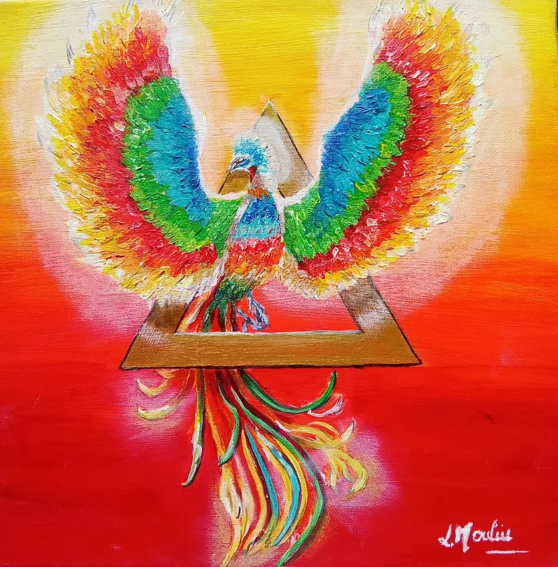
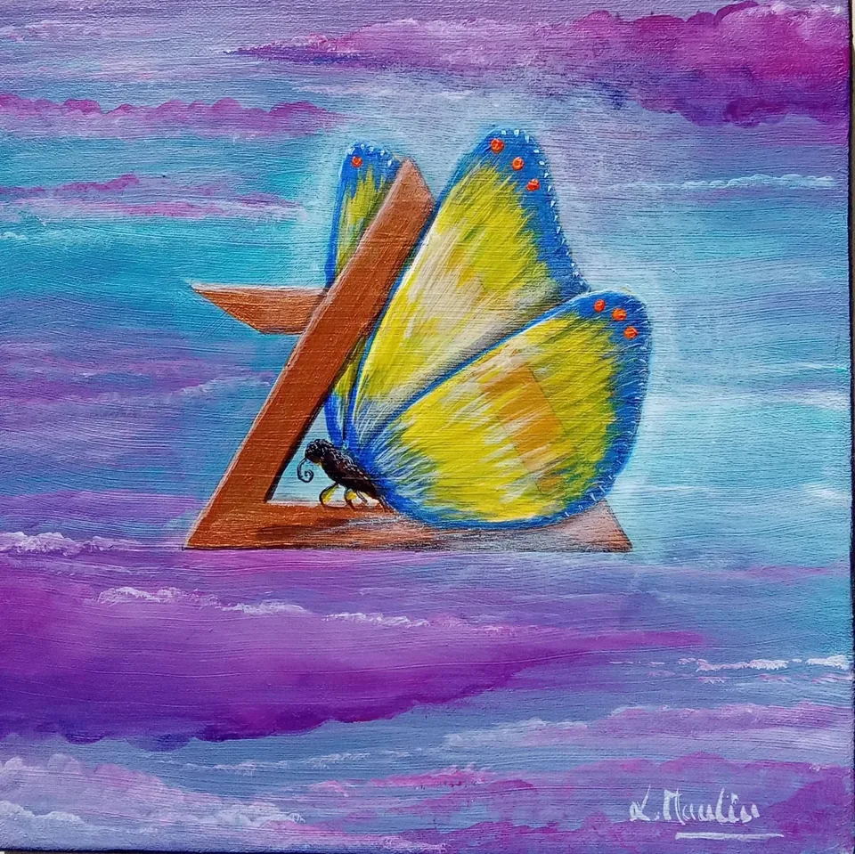
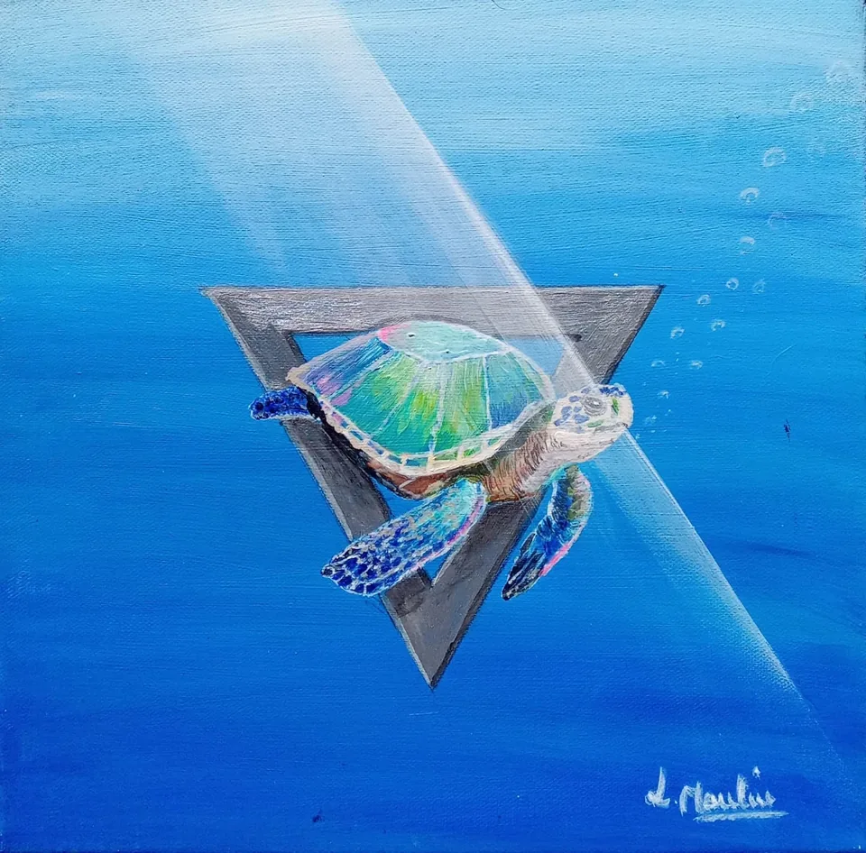

Au cœur du lien.
Au-delà des sens. Quatre univers vivants autour d’un même chemin de cœur.
Découvrir les accompagnements


Le vivant a mille façons de nous relier.
Quatre façons d’entrer dans le lien.
Au-delà des sens. Quatre univers vivants autour d’un même chemin de cœur.
Découvrir les accompagnements

